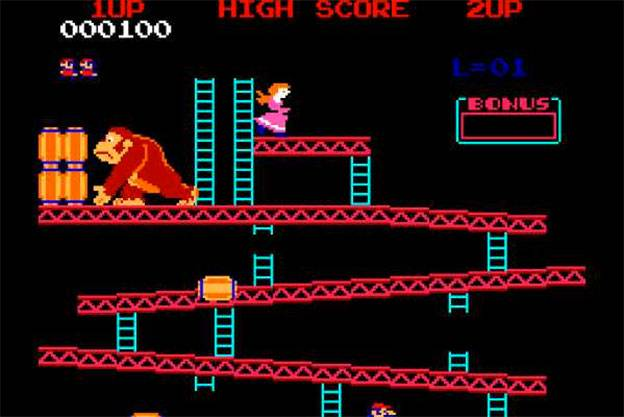

O autor do artigo original fez um levantamento com 30 jogos mais influentes,importantes para a evolução dos jogos na indústria do entreterimento. Entretanto, neste exercício estamos abordando apenas os jogos iniciais dessa lista. Para quem deseja ver o restante do artigo, o link completo está disponível no cógido HTML dessa atividade :)
1978 – Space Invaders
Se Pong fez as pessoas se acostumarem a jogar em público, Space Invaders levou o vício a um novo patamar.Foi o produto que deu um sopro de ânimo a um abatido nicho de mercado e que inspirou muitos pretendentes a designers a seguir na profissão(Shigeru Miyamoto, da Nintendo, e Hideo Kojima, da Konami, se declaram influenciados pelo jogo). Em 1978, a presença de Space Invaders no Japão era maciça – em bares, restaurantes, shopping centers.Em dois anos, a Taito distribuiu 360 mil máquinas no mundo (um sexto delas apenas nos EUA), que renderam mais de US$ 2 bilhões em fichas (moedas, no caso) ao final de 1982.
1980 – Pac-Man
O grande público já estava mais acostumado aos videogames na entrada da nova década, o que fez o sucesso de Pac-Man algo inevitável. Pela primeira vez o jogador pôde se relacionar realmente com um protagonista – mesmo que ele fosse uma bola amarela com crises de apetite e perseguida por fantasmas obcecados.

Antes do herói criado por Toru Iwatani (diz a lenda que ele se inspirou no formato de uma pizza cortada para criá-lo), games eram estrelados por personagens anônimos. Mais do que um fenômeno cultural e midiático que rendeu rios de dinheiro aos envolvidos, Pac-Man era a peça que faltava para estabelecer definitivamente os games no imaginário popular.
1981 – Donkey Kong
O marco zero das narrativas nos games também é celebrado por ter sido o primeiro jogo dirigido por Shigeru Miyamoto, na época um promissor designer da Nintendo. Donkey Kong, o vilão batiza o jogo, deixando para o herói Jumpman o papel de coadjuvante (rebatizado de “Mario” anos mais tarde, o encanador acabou tornando-se o maior protagonista da história dos games). Inspirado pelo filme King Kong, Miyamoto determinou a premissa do gênero “plataforma” – correr e pular para alcançar novos caminhos -, que dominou os games durante mais de uma década. Curiosidade: até hoje há pessoas tentando quebrar o recorde do jogo. A disputa entre os dois principais jogadores foi retratada no ótimo documentário King of Kong.
1985 – Super Mario Bros.

Criado por Shigeru Miyamoto, Super Mario Bros. revolucionou de cara, obrigando o jogador a seguir sempre adiante, explorando oito mundos com uma inédita variedade de cenários e utilizando poderes que nenhum título oferecia. Mario pode crescer, atirar fogo, correr e saltar, além de eliminar inimigos de maneiras diferentes. Nunca um herói virtual foi controlado de modo tão refinado e preciso. Simples de aprender e difícil de dominar (e largar), foi inspiração para todos os games de ação.